I build things that
have to work.
Robotics engineer. Started competing in 6th grade. Still going. Every mechanism I build has calculations behind it, failures before it, and a competition deadline driving it.
Where it started. Solar panel cleaning robot, autonomous EV control systems, robot lead on the Masterpiece season. Reached California Invitational.
Core engineer on 24Karat. New game every year, new robot every year. 50+ transfer iterations, 3 shooter versions, dual-motor lifts, custom silicone molds.
Personal project since 7th grade. Blew up ESCs, learned why, fixed the circuit. 23+ chassis iterations. 306 mph eggbeater weapon. SolidWorks FEA-driven design.
5th at State in Circuit Lab (9th grade, no formal physics). EV-C autonomous control system with odometry-anchored S-curve navigation and sensor fusion.
Built and fine-tuned a YOLOv8-based real-time weed detection model for automated pesticide spraying, trained on the Cardinal H100 supercomputer through a STEM Institute (SI) research program. Three dataset iterations, full evaluation pipeline, and a web demo.
Bought a broken printer in 5th grade and spent two years turning it into a high-performance machine. Klipper firmware, dual Z axis, input shaping, CF-capable hotend, remote access over SSH tunnel, AI failure detection, and a Pi 5 brain.
FTC Team 20744
Core engineer on FTC Team 20744 "24Karat." Every year brings a brand-new game — which means every year I design, build, and deploy a completely new robot from scratch.
This section documents the mechanisms I designed, iterated on, and deployed — from concept through competition. Detailed technical breakdowns, engineering decisions, failure analysis, and the solutions that worked under pressure.
Mechanisms Overview
The FIRST Tech Challenge (FTC) is a global competition where teams design 18-inch robots to compete in a new game every season. Unlike longer engineering projects, FTC demands rapid iteration: a new game reveal, 6–8 weeks of design and build, then competition season. There's no room for "we'll get it right next year." It has to work now.
This overview walks through the mechanisms I designed and built across the 2024–2025 and 2025–2026 seasons. You'll see the problems I faced, the solutions I chose, and why those solutions mattered. Each mechanism has a dedicated deep-dive page with calculations, CAD, and iteration history.
FTC Seasons
Every season brings a completely new game. New scoring rules. New field. New robot design.
A shooting-focused game where robots collect 5-inch spheres and score them into corner goals. Won by teams that shoot consistently, quickly, and under pressure.
Shooting Mechanism (V1–V3) · Tipper Park
A precision placement game where robots score triangular samples into baskets and onto bars at multiple heights. Speed, precision, and reliability all matter equally.
Vertical Lift · Linear Extension · Transfer System (3 iterations) · 2-Bar Deposit Arm
DECODE™ 2025–26
DECODE™ is a shooting-based game where robots collect 5-inch spherical artifacts and score them into corner goals. The game demands three things: consistency (every shot must go the same place), speed (cycle time matters), and reliability (one jam costs you matches).
What Robots Had to Do
- Collect artifacts from the field.
- Shoot them accurately into corner goals.
- Navigate field zones for additional points.
- Complete a Base park at the end of the match.
What I Worked On
- Shooting Mechanism (V1–V3): turreted shooting system for multi-angle scoring.
- Tipper Park Mechanism: compact tipping solution for consistent Base ranking point.
Field Layout

INTO THE DEEP™ 2024–25
INTO THE DEEP™ is a precision placement game. Robots pick up triangular samples and score them into baskets or onto bars at multiple heights. The challenge: every movement must be fast, smooth, and precise.
What Robots Had to Do
- Collect samples from the field.
- Lift them to multiple scoring heights.
- Place them accurately into baskets or onto bars.
- Complete endgame tasks such as climbs or parks.
What I Worked On
- Vertical Lift: dual-motor architecture and counterspring tuning.
- Linear Extension System: horizontal extension on a linear slide for scoring reach.
- Transfer System: extensive iteration leading to an active vectoring claw.
- 2-Bar Deposit Arm: optimized linkage for controlled drop-offs.


Full Robot Overview
For the INTO THE DEEP competition robot, I led design and manufacturing of the V2 platform — responsible for the extension system, lift architecture, transfer claw, and deposit arm. The goal: design these subsystems to work seamlessly with my teammates' drivetrain, intake, and control systems.
Team Subsystems
- Custom Drivetrain: Built using four 6061 aluminum plates custom cut on an industrial laser cutter to optimize chassis footprint.
- Vertical Lift: Two synchronized motors geared at 5.7:1 with 3D printed sprockets and chain, doubling the previous lift speed. Utilizes a 3-stage MiSUMI structure and a down-string spring to manage slack.
- Virtual 4-Bar Intake: Top-down, motor-driven intake. A chain mounted to a fixed shaft creates a virtual 4-bar, orienting the intake without a separate motor.
- Intake Rollers: 3D-printed TPU fingers with hooks offset at 90° to automatically orient samples vertically. A bottom roller lined with surgical tubing acts like a vacuum to sweep up pieces.

Vertical Lift
The vertical lift is responsible for the longest physical movement in our scoring cycle and sees the highest volume of repetitions during a match. To hit aggressive cycle-time targets, I overhauled our lift architecture and load management system.
Dual-Motor MiSUMI Setup
Originally, a single motor was bottlenecking cycle speed. Moving to a dual-motor setup — combined with a change in the motor ratio — completely doubled the speed of the lift.
Mechanics & Reliability
- Actuation: Two synchronized motors geared at 5.7:1, using custom 3D-printed sprockets and chain for perfectly matched power delivery.
- Structure: 3-stage MiSUMI slide structure for rigidity and smooth travel under high lateral loads.
- Down-string Tensioning: Counter-spring on the down-string dynamically adapts to slack caused by gravity assisting the descent, preventing derailments.
Counterspringing
Doubling the speed of the lift introduced a new problem: high current draw and increased stall risk. I implemented a mechanical counterspringing system to minimize load on the motors.
Gravity Neutralization
Constant-force springs attached to the moving stages neutralize the gravity load of the lift.
- Reduced Motor Strain: Motors only need to overcome inertia and friction, not dead weight.
- Battery Efficiency: Lower current draw prevents voltage sag during rapid cycling.
- Faster Acceleration: Without fighting gravity, motors reach peak RPM much faster on the upward stroke.
Shooting Mechanism
The shooter is the most critical system in DECODE — it's responsible for scoring, so it has to be consistent, fast, and reliable. A single jam or miss during a critical match point can cost you the game.
My approach: iterate relentlessly. I built three major versions (V1, V2, V3), each time testing flywheel inertia, hood angles, friction losses, counter-roller dynamics, and turret mechanics. Every design decision was validated by testing.
Version 1 Prototype
First prototype: a double vertical flywheel system using two independently driven 6000 RPM motors with 4-inch wheels. While one advantage was inherent backspin mitigation, the design proved impractical for competition.
- Accuracy Issues: Variations in motor output between the two wheels caused inconsistent ball trajectories.
- Low Rate of Fire: Struggled to maintain consistent shooting speeds due to uneven power delivery.
- Design Constraints: Fixed angle wheels and lightweight wheels made the launcher oversized, too heavy for effective turret mounting, with very little position flexibility.

Version 2 Iteration
V2 moved to a servo-actuated hooded design powered by dual 6000 RPM motors. A rack-and-pinion mechanism allowed precise hood angle adjustment between 35° and 55°, enabling fine-tuned shot trajectories.
Key Upgrades
- Weight Reduction: Pocketed plates reduced overall mass by 0.75 kg without compromising strength.
- Turntable Bearing: Geared lazy-susan bearing enabled smooth left-right turret rotation and acted as a receiver for artifacts.
- Friction Reduction: Thrust bearings at all wall interfaces, lubricated with NLGI Grade 2 grease. Belts tensioned slightly loose to reduce drag.
- Counter-Roller Introduction: Belted 30A shore hardness counter-roller spins clockwise to remove unwanted backspin, increase compression, and produce faster shots.

Version 3 Competition
V3 includes a multitude of friction, angle, and weight optimizations to minimize cycle time and maximize reliability. PID control ensures consistency across varying battery levels.
Major Refinements
- Advanced Counter-Roller: Using a gear reversal system and HTD 3 belts, two custom molded top rollers spin at 9000 RPM to mitigate backspin.
- Custom Silicone Molding: After Andymark 40A tore and Colson 30A reduced contact area, I created 3D printed molds and poured custom 2-part 30A silicone — consistent, leak-free parts.
- Optimized Friction: GT2 and HTD3 belts replace HTD5. Thrust bearings everywhere clamping forces exist. Large radius herringbone gear actuates the hood around the wheel center.
Flywheel Inertia Analysis
Iterated through modeling clay (V1), solid disk (V2), and finally a pocketed ring (V3) to maximize inertia while minimizing weight.

Tipper Park Mechanism
In DECODE, the Base ranking point is free points if you tip the robot at the end of the match. Most teams tried full-lift mechanisms, but they ran out of time or hit the 18-inch height limit. The solution: a small, fast tipping mechanism that secures this point reliably while staying simple.
The design uses two Axon Max servos in parallel for redundancy, torque multiplication, and reliability under battery sag. FEA was used to optimize the kicker plate — strong enough to handle the load, light enough to matter.
Finite Element Analysis
I ran a static FEA study on the kicker plate to ensure sufficient strength under the robot's weight, while allowing mass minimization through a strategic taper in areas with lower stress loads.


Linear Extension
The linear extension system provides the horizontal reach necessary to score samples in INTO THE DEEP. Designed to be fast, stable under load, and smoothly integrated with the transfer and intake mechanisms.
Design & Actuation
- MiSUMI Linear Slides: Compact foundation maximizing stiffness while minimizing horizontal footprint.
- Power Delivery: Single Axon Max servo with a custom herringbone gear reduction for adequate driving force without stalling.
- Herringbone Gear Profile: Self-centering during operation, smooth power transmission without side-load slipping or axial thrust forces.

Transfer System
The transfer system takes samples from the intake and moves them to the deposit arm for scoring. It runs every cycle, hundreds of times per match. If it jams, slips, or misaligns — you lose time and points.
Three major iterations. V1 and V2 were passive systems that eventually hit their limits. V3 — the active vectoring claw — solved the core problem through active motor control and precision geometry. 50+ prototype versions went into this final design.
Version 1 — Passive Rubber-Band Compression
Passive finger geometry with rubber-band-based compression. Bands allowed the system to flex around the sample and guide it upward. Compression adjustable by changing band count and mounting points.
What Worked
- Very low weight
- Simple, low-part-count geometry
- Adjustable compression using rubber bands
What Didn't Work
- Unpredictable sample rotation
- Required near-perfect intake angle
- No positive control — sample could slip or bounce

Version 2 — Torsion Spring + Micro-Servo Gate
Introduced a torsion spring for more consistent preload and a micro-servo gate to stabilize the sample during transfer. Compression adjustable by changing torsion spring preload.
What Improved
- More consistent alignment due to torsion spring preload
- Micro-servo gate reduced bounce-outs
- Better tolerance to imperfect intake angles
Remaining Problems
- Too heavy at the end of the arm
- Servo horn flex under load
- Snag points — exposed edges caught on triangular corners, causing jams

Version 3 — Active Vectoring Claw
The most common culprit of lost time and reliability. Replaced passive systems with a compact Axon Mini-powered claw. Before arriving at this design, we designed, manufactured, and tested 50+ versions of both passive and active systems. Rigorous testing determined that active servo motion produced the highest performance.
Claw Geometry & Mechanics
- Funneling Vector Geometry: Conforms to the shape of the sample and intake, actively vectoring pieces into position.
- Maximized Surface Contact: Internal shape matches the sample perfectly for a large, stable grip.
- Self-Centering Herringbone Gears: Multiple teeth contact simultaneously, drastically reducing chances of slipping or stripping.
- Lightweight & Enclosed: No snag points, fully enclosed geometry for smooth and predictable handoffs.

2-Bar Deposit Arm
A 2-bar mechanism that moves the sample from the intake to the scoring baskets and bars. Powered at the back through a 1:1 aluminum gear connected to an Axon Mini to maximize movement speed.
Additionally, a pitch degree of freedom pivots the end of the arm to optimize the drop-off position. Goal: fast, predictable motion path with low mechanical complexity.
Torque & Payload Calculations
Required torque calculated at 51 cm extension length to ensure the arm could reliably lift the extension slides and end effector:
Science Olympiad
Science Olympiad is an organized, competitive program for students to practice hands-on science and engineering. Use the sidebar to navigate events.
Science Olympiad Overview
Science Olympiad lets students practice hands-on science and engineering in a competitive format. School teams prepare a roster of students who train across many events — laboratory skills, building and design challenges, timed performance tasks, and subject knowledge.
The emphasis is practical and collaborative: students build prototypes, run repeatable tests, record results, and work together to solve problems. The organization progresses from local invitationals to regional and state tournaments, culminating in the National Tournament at a rotating host university.
I started participating in Science Olympiad in 9th grade.
Circuit Lab — C
Circuit Lab tests practical understanding of basic electrical circuits: building and troubleshooting simple circuits on a breadboard, identifying common components, taking measurements with a multimeter, and predicting circuit behavior.
Circuit Lab teaches small, practical skills used in electronics: reading schematics, using a multimeter, and understanding how series/parallel connections affect voltage and current. Those skills transfer directly to prototyping and debugging robotics electronics.
Electric Vehicle C 2025–26
Autonomous Control System 2026
Odometry-driven S-curve navigation with inertial sensor fusion, time-targeting, and dynamic stability control. Capable of completing a 7–10 meter precision run with optional bonus-can navigation using a dynamically generated S-curve anchored to forward odometry.
Core Capabilities
- Hybrid odometry & inertial navigation: Wheel encoders combined with a low-pass-filtered inertial sensor for heading stability.
- Odometry-anchored S-curve navigation: Lateral S-curve motions parameterized against forward distance — same physical location regardless of speed.
- Dynamic power scheduling: Smooth acceleration → steady cruise → predictive deceleration → slow creep near finish.
- Time-targeting controller: Proportional scheduler adjusts speed to meet a target finish time while preserving distance and heading accuracy.
- Stability & drift management: Sensor smoothing, small-value deadbands, limited integral action on lateral error, softened heading corrections near end of run.
Representative Math
Areas for Improvement
- More tuning & testing across track lengths and battery states.
- Bonus-can reliability — refine S-curve + add short-range sensor to confirm clearance.
- Speed control & braking — velocity observer and tighter decel scheduling.
- Telemetry logging & automated regression.
- Sensor fusion — implement complementary filter or Kalman filter for statistically robust encoder + inertial blending.
Media
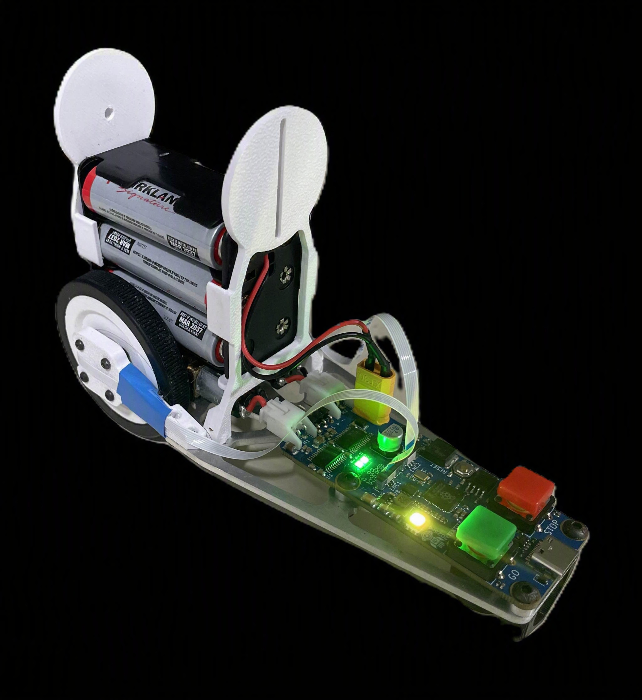
Code
// evc_autonomy.ino loading...V1 — Prototype Invitational
A rapid prototype originally built for an invitational event and later used at regionals. A rushed build — during the invitational, setup and tuning mistakes caused failures on the track. V1 drove only forward and did not attempt the bonus-can.
Drive power was switched with an electromechanical relay (simple on/off) rather than a proportional motor controller. A single wheel encoder estimated traveled distance. Control was implemented as bang-bang corrections: relay turned the motor fully on or off to reduce distance error.
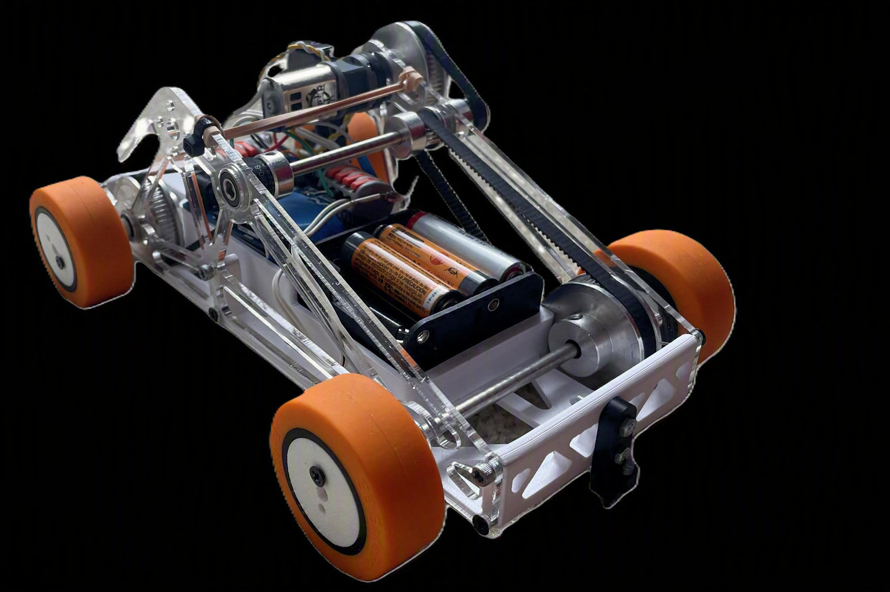
Combat Robotics
Personal project started in 7th grade — still in active development. Combat robotics is where I go when I want to push engineering to its actual limits: high-speed spinning weapons, impact loads that shatter lesser designs, and a weight budget measured in grams. Every gram matters. Every millimeter matters.
Combat Robotics Overview
Combat robotics is a personal engineering project I started in 7th grade and am still actively developing. The goal: build a competition-ready combat robot from scratch — designing, iterating, and engineering every subsystem myself.
The project began as an experiment with a horizontal spinner and has evolved through multiple generations of vertical spinner designs, each more refined than the last. This isn't a kit build. Every chassis, every weapon geometry, every gear ratio was calculated and designed by hand in SolidWorks.
The current robot is V3 — still being refined. SolidWorks static studies are being used to validate structural decisions before printing anything. This is ongoing.
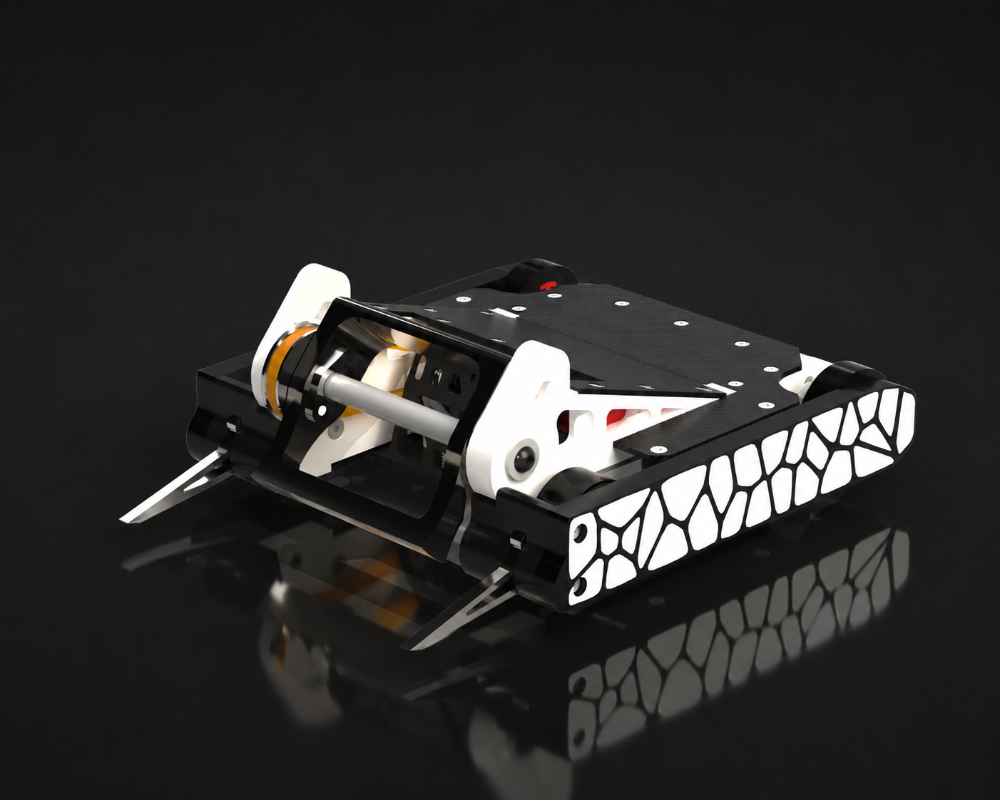
V1 — Horizontal Spinner
The horizontal spinner was my first ever combat robotics project — built to experiment with high-speed weapon systems, understand brushless motor behavior, and get hands-on with the electrical and mechanical challenges of spinning weapons before committing to a full robot design.
System Specs
- Motor: 1100 KV brushless outrunner
- Weapon disc: 140 mm diameter steel disc
- Battery: 4S LiPo (14.8V nominal, 16.8V fully charged)
Weapon Physics
Why the Horizontal Spinner Was Abandoned
The horizontal spinner concept has a fundamental physics problem: gyroscopic deflection. A high-speed disc spinning in the horizontal plane resists any change to its axis of rotation. When the robot turns or gets hit, the gyroscopic force fights the chassis — making the robot nearly unsteerable and causing the frame to flex and twist unpredictably under impact.
- Gyroscopic precession: Any applied torque perpendicular to the spin axis produces a reaction 90° away. Turning while the weapon spins causes the robot to pitch or roll instead of yaw cleanly.
- Deflection under impact: When the disc hits a target, the reaction force couples with the gyroscopic effect to push the robot in unpredictable directions, making follow-up strikes unreliable.
- Low wedge compatibility: Horizontal spinners sit high and present a large lateral surface. A low wedge opponent can slide underneath and negate the weapon entirely.
These aren't solvable by better chassis stiffness. They're geometric and physical constraints. The conclusion: move to a vertical spinner, where the gyroscopic effect actually aids ground contact and the weapon geometry is far more favorable.
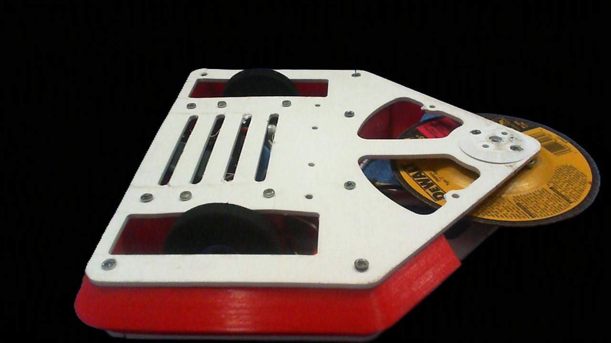
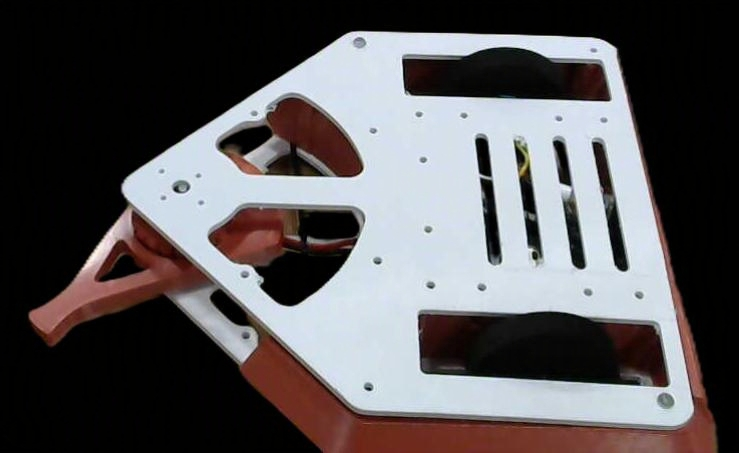
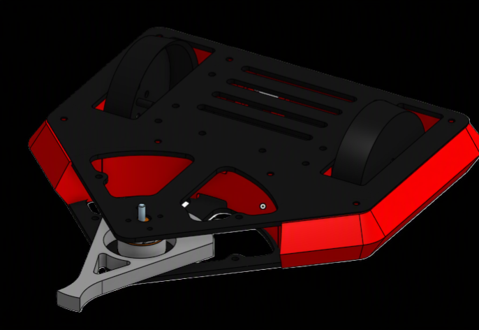
Failure Analysis & ESC Lessons
The horizontal spinner phase destroyed a significant number of ESCs before I understood what was actually happening. This failure analysis is one of the most valuable engineering lessons of the project.
How the ESCs Were Dying
Every time the weapon disc hit something and decelerated rapidly — or when the motor was braked — a massive voltage spike appeared on the power rail and killed the ESC's MOSFETs. I went through multiple ESCs before I stopped and actually analyzed the circuit.
The Root Cause: Back-EMF & Stall Torque
- Brushless motors are generators: When a spinning brushless motor decelerates suddenly — from impact or braking — the rotating magnetic field generates a back-electromotive force (back-EMF) spike. This voltage can far exceed the battery voltage and exceeds the MOSFET breakdown voltage, destroying the ESC instantly.
- Stall torque vs. running current: Brushless motors at stall draw enormous current — sometimes 10–20× their running current — because there's no back-EMF to limit it. ESCs rated for the running current fail under stall conditions. Undersized ESCs couldn't handle the instantaneous current demand during weapon spin-up from zero or after a hard impact.
- Brushed motors have the same issue: Brushed motors' commutator brushes arc under high current, and without protection, the motor controller sees the same inductive voltage spike on deceleration.
The Fix: Schottky Diode Flyback Protection
The solution was adding a Schottky diode — specifically a flyback (freewheeling) diode — across the motor terminals in the correct orientation.
- How it works: When the motor decelerates and generates a back-EMF spike that exceeds battery voltage, the Schottky diode becomes forward-biased and provides a low-resistance path for the inductive energy to dissipate — bypassing the ESC's MOSFETs entirely.
- Why Schottky specifically: Schottky diodes have a very low forward voltage drop (~0.2–0.4V vs ~0.7V for standard silicon diodes) and extremely fast switching. In a high-frequency back-EMF spike scenario, a slow diode fails to clamp the spike in time. Schottky diodes respond fast enough to catch the transient.
- Orientation matters: The diode is placed with the cathode toward the motor's positive terminal. During normal operation it's reverse-biased and does nothing. During a back-EMF spike, it conducts and clamps the voltage.
After implementing the diode circuit, ESC failures from back-EMF stopped entirely. This was one of the most important electrical engineering lessons of the project — understanding not just that components were failing, but why at the circuit level.


Vertical Spinner V1
After abandoning the horizontal spinner, I moved to a vertical eggbeater design — but V1 was a failure from the ground up. Nothing about the architecture worked. The chassis was oversized, the weapon was too big and heavy for the weight class, and the entire robot was built on assumptions that didn't hold up to actual constraints.
What Went Wrong
- Oversized chassis: The frame was designed without a real weight budget. Every plate, every mount, every standoff was heavier than it needed to be — and collectively, the chassis ate into the weight allowance so aggressively that there was almost nothing left for the weapon system and drivetrain.
- Weapon too big and heavy: The 80 mm eggbeater was oversized relative to what the chassis and motor could support. A weapon that heavy needs a chassis stiff enough to absorb the reaction forces, a motor powerful enough to spin it up quickly, and a drivetrain that can handle the gyroscopic loads. None of that existed in V1.
- No integrated design process: I designed the chassis and weapon separately, then tried to make them fit together. The result was a robot where every subsystem competed for the same有限 weight budget instead of working as a cohesive unit.
- 8 chassis iterations, none solved the core problem: I kept redesigning the chassis trying to fix symptoms — too heavy, too flexy, wrong geometry — without recognizing that the entire architecture was wrong. Iterating on a bad foundation just produces different flavors of bad.
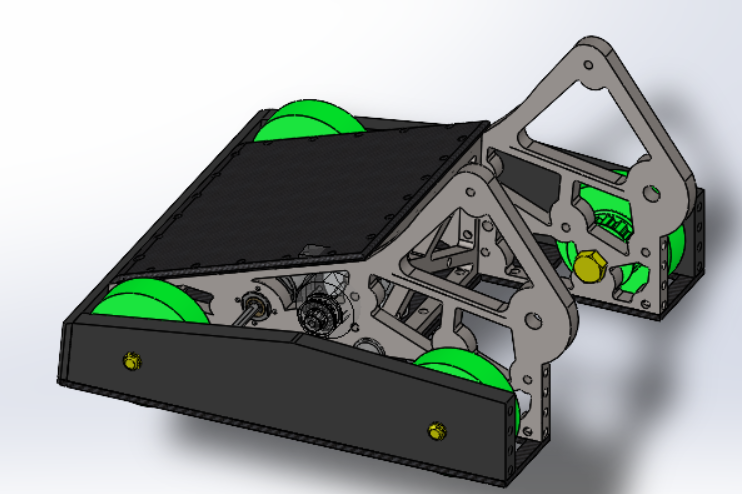
Vertical Spinner V2
V2 addressed the chassis size problem with a significantly smaller, lighter frame — but introduced new problems that took 15 iterations to fully diagnose.
Changes from V1
- Weapon: 85 mm diameter eggbeater (slight size increase for more energy storage)
- Chassis: Redesigned from scratch — smaller footprint for weight reduction
- Drive motors: JustCuz Robotics brushed motors
Why V2 Still Failed
Problem 1 — Brushed Drive Motors
I used brushed motors for the drivetrain because they're simpler to control and cheaper. In practice, they were the wrong choice for this application:
- High stall current: Brushed motors at low speed or under load draw enormous current. In a combat robot, the drivetrain stalls constantly — tight turning, pushing, being pushed. The motors ran hot and the ESCs struggled.
- Low efficiency: Brushed motors waste more energy as heat compared to brushless equivalents. In a weight-limited robot where battery size is constrained, efficiency directly translates to runtime and speed.
- Brush wear: Under repeated high-current stall events, brushes degrade quickly. Not ideal for a robot that gets hit repeatedly.
Problem 2 — Wrong Weapon Motor
I used a FingerTech Robotics inrunner at 2980 KV. The motor was physically too small for the application:
- Inrunner vs outrunner: Inrunners have the magnets inside the rotating shaft. They spin faster but produce less torque at a given size. For spinning up a weapon disc with meaningful rotational inertia, torque during spin-up matters — an underpowered motor means slow weapon ramp-up and poor recovery after an impact.
- Too small physically: The motor's stator couldn't produce enough torque to spin the 85 mm eggbeater to target speed quickly enough. Recovery time after impact was too long.
Problem 3 — Structural Integrity
Shrinking the chassis for weight savings compromised the structural integrity. The frame flexed under weapon torque reaction, and impact loads transmitted directly into drivetrain components. 15 iterations tried to patch this — gussets, different material thicknesses, geometry changes — but the core architecture had too many competing constraints to solve cleanly within V2.
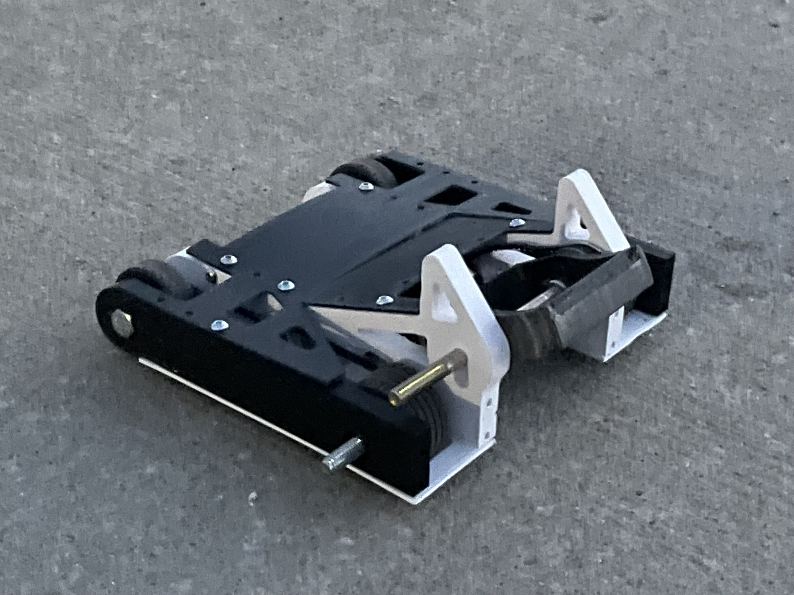
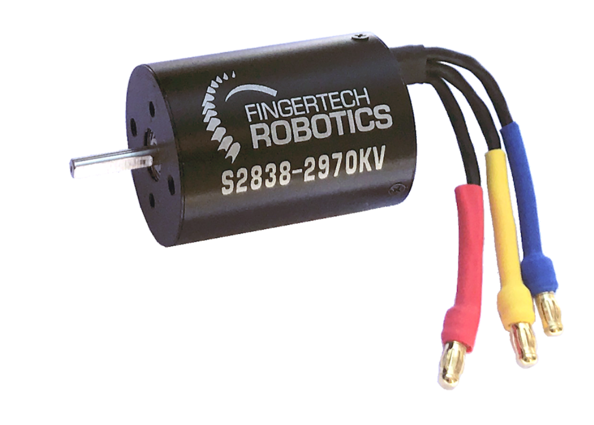
Vertical Spinner V3 — Current
V3 is the current build — still in active development and not yet competition-ready. Every major lesson from V1 and V2 is incorporated: correct motor selection, verified weight distribution, SolidWorks-validated structure, and a chassis designed for pocketability and TPU integration from the start.
Weapon System
- Weapon: 95 mm diameter eggbeater
- Motor: BA 2320, 1860 KV outrunner
- Battery: 4S LiPo, 1100 mAh
Why the BA 2320 1860 KV
- Outrunner geometry: The rotating outer can gives the motor a larger effective radius for torque production compared to an inrunner of the same size — far better for spinning up a weapon with real rotational inertia.
- 1860 KV on 4S: This KV rating hits the target tip speed window without over-revving or requiring additional reduction. Direct drive to the weapon keeps the system simple and eliminates belt/gear losses.
- Spin-up torque: The BA 2320 has enough stall torque to bring the eggbeater from zero to fight speed in under 2 seconds — crucial for recovery after an impact that stalls the weapon.
Drivetrain
The drivetrain uses JustCuz Robotics Blitz Lites — brushless drive motors purpose-built for combat robots. The switch from the brushed motors in V2 to these was significant:
- Efficiency: Brushless drive motors run significantly cooler and more efficiently under the repeated stall conditions of a combat match.
- Weight: Blitz Lites are purpose-optimized for the weight class — small, powerful, and light.
See the for the full gear ratio analysis.
Battery — 4S 1100 mAh
Battery selection in combat robots is a delicate balance between energy, weight, and discharge rate. The 4S 1100 mAh cell was chosen after analysis:
- 4S voltage: 14.8V nominal gives the weapon motor its target RPM band. Going to 6S would overspin the motor beyond its rated limits and require a different KV selection.
- 1100 mAh capacity: A combat match is typically 3 minutes. At peak combined weapon + drive current (~40–60A burst), a 1100 mAh pack at 100C discharge rate has sufficient instantaneous current delivery. Going larger adds weight that hurts maneuverability. Going smaller risks voltage sag under load, which drops weapon speed mid-fight.
- C rating: High-C LiPo cells maintain voltage under burst current loads. Voltage sag directly reduces weapon motor RPM and stored energy — a sagging battery is a slower weapon.
Status
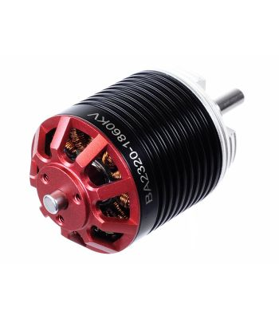
Drivetrain & Ratio
The drivetrain in a combat robot isn't just about going fast — it's about controlled aggression. You need enough speed to close distance and dodge, enough torque to push and resist being pushed, and enough efficiency to survive a full match without browning out.
Optimal Gear Ratio
The target drivetrain tip speed is ~250 mph weapon spin with the robot itself moving at a controlled, maneuverable pace — roughly 4–6 mph for a robot in this weight class. Too fast and the robot is uncontrollable; too slow and it can't reposition after an attack.
Why 250 mph Weapon Tip Speed is the Target
250 mph (~112 m/s) is a widely-used benchmark in combat robotics for vertical spinners in the antweight/beetleweight class. Here's why it matters:
- Energy scales with v²: Kinetic energy is ½mv². Doubling tip speed quadruples stored energy. At 250 mph, even a small eggbeater stores enough energy to flip or damage most opponents.
- Diminishing returns above 300 mph: Above ~300 mph, the gains in stored energy are offset by increased stress on the weapon, shaft, and mounting hardware. The weapon becomes more likely to self-destruct on a hard hit.
- 250 mph is the sweet spot: Maximum competitive energy storage without risking weapon structural failure under impact loads at this weight class.
Weight Distribution
Weight distribution is as critical as total weight. In a combat robot, where and how weight is placed determines handling, stability, and how the robot responds to weapon recoil:
- Low center of gravity: Mass concentrated low to the ground reduces the tendency to flip when the weapon bites. A high CoG robot gets launched on impact.
- Rearward battery placement: The battery (heaviest single component) is placed toward the rear to counterbalance the weapon at the front. This keeps the CoG roughly centered and prevents the weapon from nose-diving the robot into the ground during spin-up torque.
- Weapon reaction forces: When the weapon hits something, Newton's third law sends a reaction force into the chassis. The chassis must be designed so this force doesn't tip the robot over or flip it — which means the CoG placement and chassis geometry work together.
- Drive wheel position: Drive wheels placed at the optimal lateral position maximize the turning moment while keeping the robot's rotational inertia low for quick pivoting.
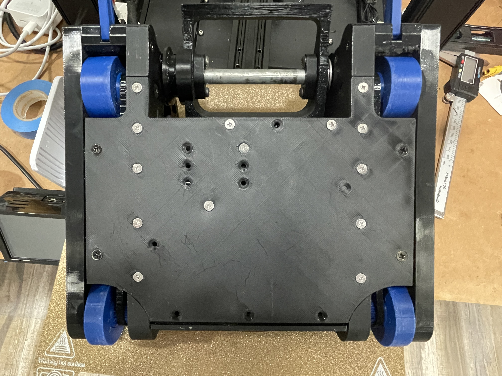
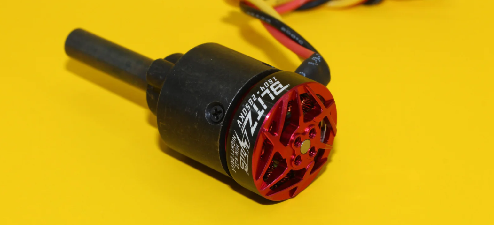
Weapon Physics & Math
The eggbeater weapon geometry was chosen deliberately. Here's the complete physics breakdown of why it works, how it's sized, and what the numbers actually mean in a fight.
Why an Eggbeater Profile
A solid disc maximizes moment of inertia for a given diameter — more stored energy. But it also risks getting stuck in an opponent after a deep bite (the disc can't "ride over" the hit). The eggbeater profile removes material asymmetrically, creating a geometry where:
- The weapon can bite into an opponent and the asymmetric shape causes it to "walk out" of the hit rather than jam.
- Material removal reduces weight while keeping much of the rotational inertia (since most of the mass is still at the outer radius, where it contributes most to I = mr²).
- The uneven mass distribution creates a slight imbalance — which, when properly tuned, is acceptable — but requires careful balancing to prevent destructive vibration at high RPM.
Current Profile
Weapon FEA Validation
Designed a high-energy weapon system targeting a calculated 250 mph tip speed; validated structural components under impact loading using SolidWorks FEA. The eggbeater must withstand extreme centrifugal stress at full spin — if the material yields, the weapon disintegrates at 300 mph.
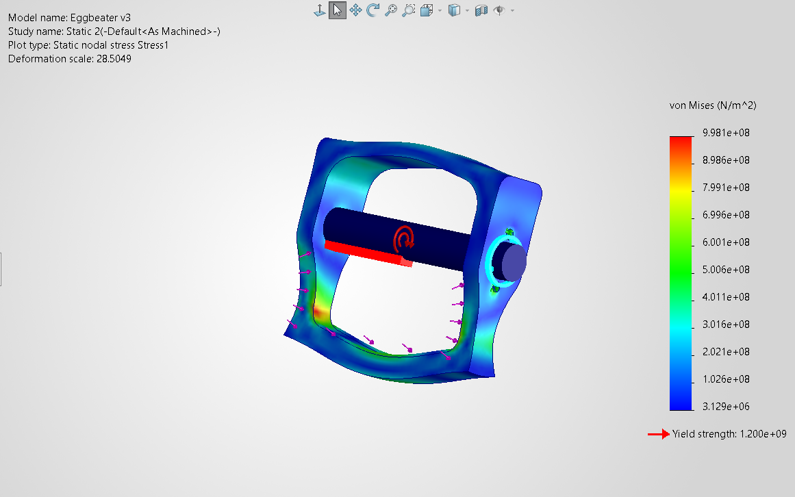
Wedge Geometry
The wedge is not a passive feature — it's an active weapon. The front wedge geometry is carefully designed to:
- Undercut opponents: A low front wedge angle slides under opposing robots and lifts them, removing their traction and presenting them to the weapon. The wedge angle is typically 5–15° — shallow enough to get under most chassis gaps, steep enough to actually lift and guide.
- Guide into the weapon: The wedge isn't flat — it's angled to direct an opponent upward and toward the eggbeater's strike zone. The geometry is designed so that once the wedge makes contact, the natural motion of the robot driving forward feeds the opponent into the weapon.
- Self-righting aid: If the robot gets flipped (invertible design), the wedge geometry also helps it drive while inverted — the weapon can reach opponents in either orientation.
- Low scrape angle: The wedge's contact point with the arena floor is kept as low as possible — ideally within 1–2mm — to prevent opponents from getting their own wedge underneath.
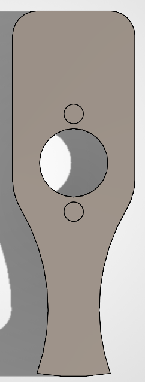
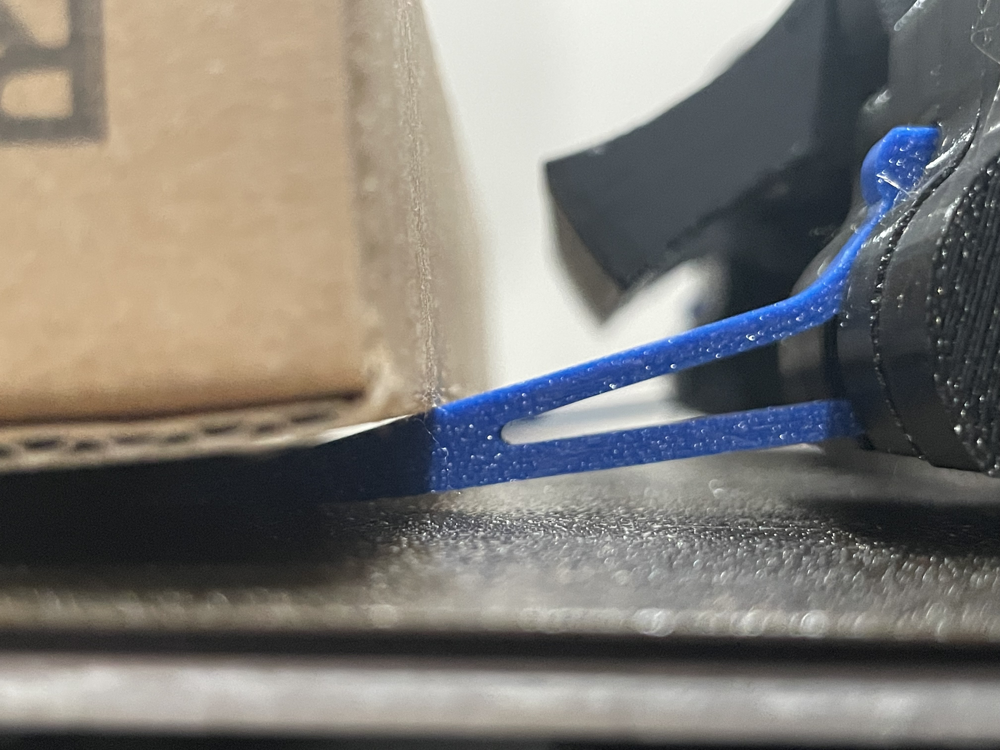
Structure & Materials
Every structural decision in this robot is a weight vs. strength trade-off. SolidWorks static studies, pocketing strategy, and TPU integration are the three tools I'm using to solve it.
SolidWorks Static Studies
Before printing any material, I run static FEA studies on every structural component in SolidWorks. This is the same workflow I use in FTC (the Tipper Park kicker plate, for example) — applied here with much higher stakes because a combat robot's chassis sees impact loads that are harder to estimate from intuition alone.
- Weapon mount stress: The weapon shaft and motor mount see the highest loads — weapon impact forces feed directly into these structures. FEA shows where yielding would occur first and guides material thickness decisions.
- Chassis torsion: When one side of the drive gets hit while the other doesn't, the chassis twists. Static studies verify that the chassis cross-section resists this without permanent deformation.
- Wedge interface: The joint between the wedge and the chassis is a high-stress point. FEA guides whether a gusset is needed and where exactly to place it.
Pocketing Strategy
Pocketing — removing material from low-stress regions of a part — is the primary weight-reduction method for structural components. The principle: keep material where the FEA shows high stress, remove it where stress is low.
- Chassis side plates: Material is removed from the center spans between mounting points, where bending moment is lowest. The perimeter and mounting regions are kept full-thickness.
- Weapon disc: The eggbeater profile is itself a form of pocketing — removing material between the "teeth" to reduce weight while keeping mass concentrated at the outer radius where it contributes most to rotational energy.
- Motor mounts: Lightening holes where FEA shows near-zero stress, full material at the bolt bosses and load-bearing edges.
Pocketing in a combat robot is not the same as in a hobby part. Over-pocket and the part shatters on first impact. The FEA studies define exactly how much material can be removed before the safety factor drops below the acceptable threshold for combat loads.
TPU Integration
TPU (thermoplastic polyurethane) is a flexible, impact-absorbing 3D-printable material. In a combat robot, it plays a specific structural role:
- Wheel guards / armor panels: TPU panels on the sides and rear absorb glancing impacts without shattering. Unlike rigid armor that transmits shock directly into the chassis, TPU deforms elastically and returns to shape, decoupling the impact energy from the frame.
- Shock mounts: TPU printed at the right infill percentage acts as a vibration isolator between the weapon motor and the chassis, protecting electronics from high-frequency vibration during weapon spin-up and operation.
- Weapon bumper: A thin TPU lip at the front of the chassis, just below the weapon, prevents opponent wedges from slipping under the weapon disc and hitting the motor mount directly.
- Why not everywhere: TPU is heavy relative to its rigidity. It's used only where impact absorption outweighs the weight cost — primarily anywhere a glancing hit is more likely than a direct hit.

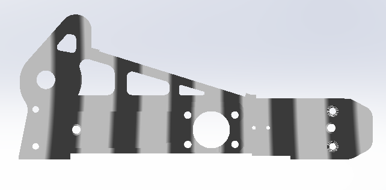
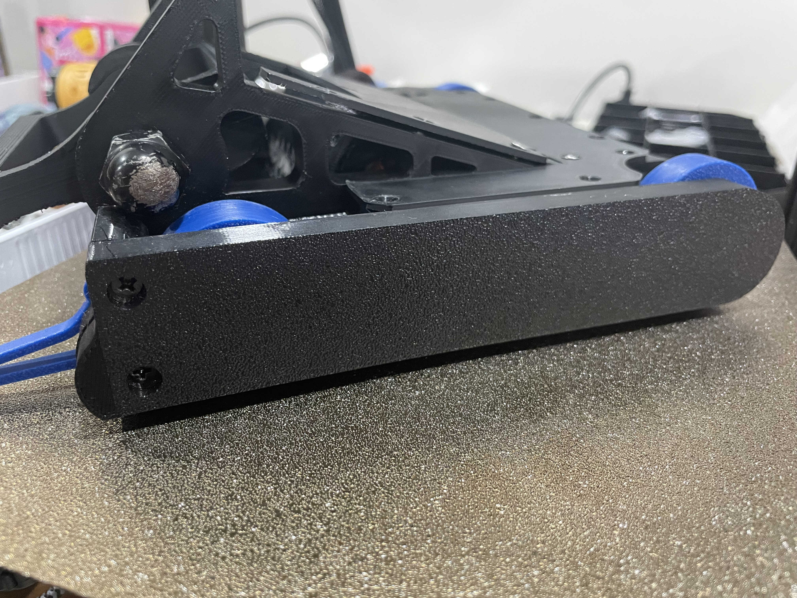
Project Timeline
This project started in 7th grade and is ongoing. The timeline reflects how long real iterative engineering takes — especially when every design decision requires validation, and every mistake reveals a lesson that changes the next iteration.
- 7th grade: Horizontal spinner experiment. ESC failures. Back-EMF lessons. Schottky diode fix.
- 7th grade (continued): Pivot to vertical spinner. V1 eggbeater — 8 chassis iterations. Chassis too large, scrapped.
- Early 8th grade: V2 — smaller chassis, 85mm eggbeater, brushed motors. 15 chassis iterations. Motor and structural problems identified.
- 8th grade (continued) → current: V3 — BA 2320 outrunner, Blitz Lites, 95mm eggbeater, 4S 1100 mAh. SolidWorks FEA driving structural decisions. TPU integration. Still converting designs to physical hardware.
Manufacturing & Machining
The design phase is effectively complete. Every subsystem has been modeled, simulated, and validated in SolidWorks. What remains is the transition from CAD to physical hardware — and that means working with real materials, not PLA prototypes.
Materials
- 4340 steel: The eggbeater weapon will be machined from heat-treated 4340 steel — the same material validated in the FEA study. This isn't printable; it requires CNC machining or waterjet cutting followed by heat treatment to hit the 1,200 MPa yield strength target.
- Carbon fiber plates: Chassis side panels will be cut from carbon fiber sheet — high stiffness-to-weight ratio, rigid enough to resist torsion under weapon impact, and light enough to leave weight budget for the weapon and drivetrain.
- Aluminum mounting hardware: Motor mounts, weapon shaft brackets, and standoff assemblies will be machined from 6061-T6 aluminum — the same alloy validated in the chassis FEA studies.
- TPU armor integration: 3D-printed TPU panels will be fitted to the final chassis for impact absorption — the one component where additive manufacturing is the right tool.
What Changes When You Leave CAD
The gap between a correct CAD model and a competition-ready robot is manufacturing. Every tolerance changes, every material behaves differently in reality than in simulation, and every bolt needs to survive what FEA can't fully predict — repeated impacts, vibrations, and the chaos of a real fight. That's the next phase.
FIRST Lego League FLL
FLL was where my robotics journey started. I competed for two seasons — 6th and 7th grade — before moving into FTC. FLL taught me the engineering design process, how to work with a team under pressure, and how to present technical work to judges. It built the foundation everything else is built on.
FLL Overview
FIRST Lego League (FLL) is a global robotics competition for students in grades 4–8. Each season centers on a real-world scientific theme. Teams design, build, and program an autonomous Lego robot to complete missions on a themed field mat — all within a 2.5-minute window. Alongside the robot game, teams develop and present an Innovation Project proposing a real solution to a problem within the season's theme.
Competitions are judged on four pillars: Robot Design, Innovation Project, Core Values, and Robot Game performance. It's fast, iterative, and demands both technical skill and clear communication.
I started FLL in 6th grade and competed through 7th grade, across the Superpowered and Masterpiece seasons — before transitioning into FTC.
Superpowered Season
Superpowered was my first ever year doing robotics — 6th grade, starting from scratch. The season's theme centered on the energy sector: how we generate, transmit, store, and consume power. It was a steep learning curve, but it's where I first learned what it means to engineer something under real competition constraints.
We advanced through regionals and states all the way to the California Invitational.
What I Worked On
- Robot Game: Contributed to mission strategy, attachment design, and iterating runs to maximize scoring within the 2.5-minute limit.
- Innovation Project: Core team member on the solar panel soiling problem — from research through expert consultation and solution design.
Competition Results
[Image placeholder — competition photos]
Innovation Project — Superpowered
Our challenge: identify and solve an impactful problem in the energy sector. We brainstormed across four categories — energy generation, transmission, storage, and consumption — and narrowed from over 50 identified problems down to one.
The Problem
Dust and soiling on solar panels reduces efficiency by 7–50%, costing solar farms between $242,000 and $1.6 million in lost revenue annually. In 2021, more than 10.8 billion gallons of water were used to clean solar panels — water that could have supplied 2 million people. Manual cleaning also claimed 11 lives in 2020.
Expert Research
- Mrs. Carrie Beddle: Overview of the energy sector and identification of solution constraints.
- Mr. Mike Hughes (Reliability First): Detailed breakdown of the power distribution and control system.
- Dr. Kishore & Dr. Raji (Denora): Fuel cell alternatives to lithium batteries and hazards of radioactive materials.
- Mr. Cody Cooper (Yellowlite): Challenges of solar installation and farm maintenance.
- Great Lakes Energy Institute (Mr. Steirer & Mr. Raymond): Validated the solution as highly beneficial for large solar farms, especially in dry regions.
- Amazon Solar Farms: Expressed strong support and promised collaboration on further development.
The Solution — Three-Part System
- Bi-directional Cleaning Robot: Mounts directly onto solar panels and automates cleaning at predefined intervals, eliminating manual labor risk.
- Water Harvesting & Filtration: Captures rainwater and recycles dirty runoff through a multi-stage filtration system — modeled after municipal wastewater treatment — for reuse.
- Regional Chemical Customization: Soiling varies by geography. The system formulates and swaps targeted cleaning fluids to match the soil profile of different global regions, validated through soil simulation experiments.
Financial Analysis — 10 MW Plant
Next Steps
- Return to Yellowlite to reconfirm recent findings.
- Ongoing conversations with NASA's Solar Energy team and Amazon Farms for collaboration.
- Partnering with a local Aurora makerspace to build a functional working prototype.
Robot Design — Superpowered
The robot game required an autonomous Lego robot to complete as many scored missions as possible on the themed field mat within 2.5 minutes. We iterated through the entire season using a structured engineering process.
Strategy & Engineering Process
- Mission Analysis: Evaluated points, distances, attachment types, and mission combination potential to form strategy early in the season.
- PDCA Framework: Followed Plan, Do, Check, Adjust cycles to map robot paths and log every iteration.
- Task Management: Used Jamboard for task tracking, rotated meeting minutes under a dedicated project manager.
- Data-Driven: Logged 1,798 mission runs and used video replays of failures to refine mechanical and code performance.
Hardware
- Chassis: Iterated through half a dozen designs (Box, XY, Droid X) before selecting the Y-Axis Robot.
- Drive System: 2 large driving motors + 2 medium attachment motors.
- Pinless Attachments: Fast-swap pinless connections for rapid mission transitions.
Programming
- Gyro Move Straight: Eliminated drift during long straight runs.
- PID Line Follow: Smooth, jerk-free navigation along field lines.
- Sensors: Built-in gyro + 2 color sensors for wall squaring and line squaring.
- Code Architecture: Modular MyBlocks and Variables for reusability; source control via GitHub.
- Python: Learned Python over the summer; implemented one full run in MicroPython.
Masterpiece Season
Masterpiece was my second and final FLL season — 7th grade. I stepped into a significantly more technical role: Robot Lead and Hardware Innovation Designer for the Innovation Project. I also built the control system for the innovation project using an Arduino R4 and designed the robot in CAD using Bricklink Studio before it was physically built.
This season is where I first seriously used CAD, which directly led me to learning SolidWorks afterward — the skill that carries through everything in my FTC work.
My Roles
- Robot Lead: Led hardware design, chassis decisions, and attachment engineering.
- Innovation Project Hardware: Designed and built the physical control system for the Oxi-Suit innovation project.
- CAD Design: Designed the robot in Bricklink Studio. Published CAD renderings and build instructions to the team website (positive-protons.com).
What This Season Taught Me
Masterpiece was the bridge between competitive Lego robotics and real engineering. Designing in CAD before building, wiring a 60V electrical system, and presenting to industry experts pushed me far beyond the FLL basics — and set me up directly for FTC.
Innovation Project — Masterpiece
The Masterpiece season's innovation challenge focused on enhancing the experience of a passionate community. Our team chose scuba diving — targeting safety, accessibility, and comfort using the Tuckman Engineering Design Process.
Community Research
Surveyed over 100 diving enthusiasts and found:
- 97% want unobstructed marine views.
- 80% want verbal communication underwater.
- 77% want longer dive times.
- 50%+ worry about dehydration.
The Solution — The Oxi-Suit
- Pre-Filtration: Pumps seawater through a saltless water softener bead system to extract harmful salts and minerals.
- Oxygen Generation via Electrolysis: Splits purified water into hydrogen and oxygen, capturing oxygen in a storage tank (110 ml required per human per minute).
- Closed-Loop Rebreather: Recycles exhaled air through counterlungs; gas sensors balance oxygen/nitrogen filler gas; soda lime absorbs carbon dioxide.
- Astronaut-Style Helmet: Maximum unobstructed visibility; bubbleless exhaust protects marine life.
- Nitrogen Tank: Dedicated tank prevents oxygen toxicity — added after expert consultation.
Control System — My Build
I designed and built the hardware control system for the Oxi-Suit:
- Brain: Arduino R4 as the central controller managing all sensors, valves, relays, and gas levels.
- Power: 60V / 20A electrical system with a voltage regulator for stable supply.
- Display: Status display showing real-time system state.
- Oxygen Sensor: Measures O₂ percentage continuously.
- Solenoids: Relay-controlled solenoids release oxygen and nitrogen on demand.
Expert Consultations
- Dive shop owners and certified divers.
- Chemistry professors (oxygen toxicity, gas chemistry).
- VP of Innovation at Parker Hannifin.
- Cleveland Aquarium, Case Western, and Kent State (next steps).
- McMaster-Carr (prototyping partnership).
Robot Design — Masterpiece
As Robot Lead, I owned the hardware decisions for the Masterpiece season. I used Bricklink Studio to design the robot in CAD before building it — a first for me, and the skill that led directly into SolidWorks and FTC.
Hardware
- Drive System: 2 medium driving motors + 2 large attachment motors + 2 color sensors.
- Chassis: Custom-built, optimized robot chassis designed in Bricklink and published open-source at positive-protons.com.
- Pinless Attachments: Iterated through numerous designs to finalize fast-swapping, pinless mechanical mechanisms for rapid mission transitions.
Programming & Performance
- Run Revamp: Completely revamped all runs in December — condensed individual missions into highly efficient multi-mission combinations.
- Open-Source: Published CAD renderings and full build instructions to the team website.
Agra AI
A summer research project through the STEM Institute (SI): how to leverage advances in AI and computing in agriculture. The goal was a real-time weed detection system for automated pesticide spraying — fine-tuning a YOLOv8 object detection model on a custom corn field dataset and deploying it through a web interface.
I led the model development end-to-end: dataset selection and curation, training pipeline, optimization, and evaluation — running on the Cardinal supercomputer with NVIDIA H100 access through the program.
Context & Background
This project came out of the STEM Institute (SI) — a summer research program that gives students access to university-level resources, mentorship, and high-performance computing infrastructure that would otherwise be completely out of reach.
What SI Is
- Program structure: Students work in small teams on a focused research problem over a condensed summer timeline, guided by mentors with domain expertise.
- HPC access: The defining resource SI provides is access to the Cardinal supercomputer — an institutional HPC cluster with NVIDIA H100 GPUs. Training a real computer vision model on meaningful data isn't feasible on a laptop. Cardinal is what made this project possible at a real research scale.
- Research framing: Projects follow a proper research methodology — problem definition, data pipeline, experimental setup, evaluation metrics, and a final presentation. It's not a hackathon or a workshop. The output is a working system with defensible results.
My Role
I led the model development end-to-end within the team. That meant owning the full technical pipeline: evaluating dataset options, diagnosing why early versions failed, designing the data curation and augmentation strategy, structuring the training runs on Cardinal, and building out the evaluation framework (confusion matrix, precision, recall, F1, loss curves).
The field data collection — mounting GoPros on an ATV and driving through corn fields — was a team effort. The model is mine.
Why This Project
The SI challenge question was open-ended: how can advances in AI and computing be applied in agriculture? Precision weed detection was the right answer because it's a problem where computer vision has a direct, measurable impact — not a demo, but an actual system an automated sprayer could run. The 70% reduction in pesticide use that targeted spraying enables isn't theoretical; it's been demonstrated in real deployments. Building the detection layer that makes that possible is concrete engineering.
Overview & Motivation
The broad challenge for the program: how can AI and computing be leveraged in the field of agriculture? The focus was one of the most direct applications — precision pesticide spraying using real-time weed detection.
The Problem Statement
- Finding, building, and cleaning a dataset good enough to train on.
- Picking the right model architecture for real-time field detection.
- Getting the training to actually converge without overfitting or class imbalance killing it.
- Defining what "good enough" looks like and measuring it rigorously.
- Turning model output into something that drives a real spraying system.
Motivation & Challenges
- Chemical waste: Blanket pesticide spraying wastes chemicals and pollutes runoff. Automated, targeted sprayers can cut pesticide use by an estimated 70% by only spraying where weeds actually are.
- Good data is private: Most useful agricultural imagery is owned by ag-tech companies or farms, not freely available.
- Cost barriers: Training and deploying capable AI models has historically required compute and expertise most small operations can't access.
- Rural infrastructure gaps: Limited connectivity and compute availability in rural areas constrain what kinds of AI systems can realistically run on a farm.
- Accessibility of AI: Models like YOLO make state-of-the-art object detection accessible — fast enough for real-time inference, with a simple bounding-box / label / confidence output that's easy to act on.
Why YOLO
YOLO (You Only Look Once) is a state-of-the-art real-time object detection architecture. It outputs bounding boxes, class labels, and confidence scores in a single pass — fast enough to run inference on live video, which is exactly what an automated sprayer driving through a field needs.
What I Built
- Fine-tuned YOLOv8 model: real-time weed detection in corn fields, trained on a custom curated dataset.
- Web interface: upload an image or video and get back bounding-box detections with labels and confidence scores — this is what would power an automated spraying system.
The Problem in Action
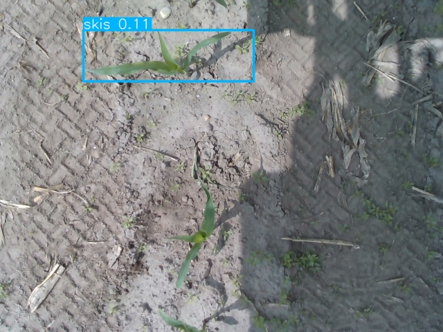
Data Collection & Prep
Good data was the hardest part of this project — harder than the model itself. Three full dataset iterations before landing on one that actually worked.
Collecting Field Data Directly
Rather than relying entirely on existing datasets, I visited a local farm and collected corn field and weed imagery firsthand:
- Hardware: Mounted and calibrated GoPro cameras on an ATV.
- Capture method: Cameras recorded as a farmer drove the ATV over the fields, capturing corn rows and weeds from a realistic sprayer's-eye viewpoint.
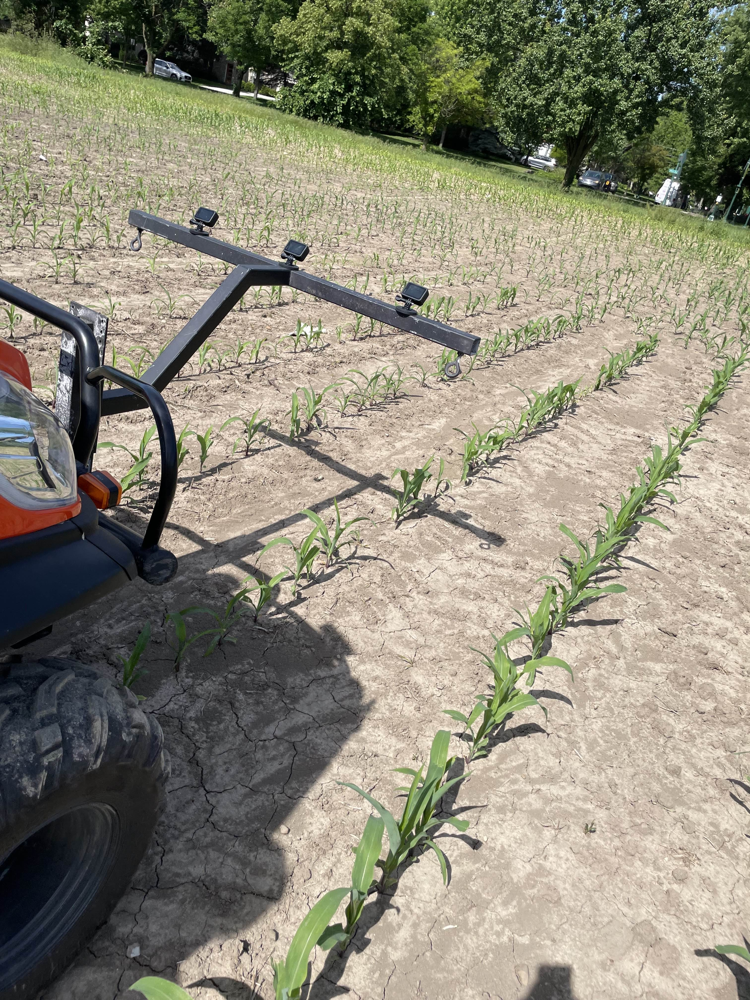
Preprocessing
Raw footage isn't usable directly. Raw images contained noise, blur, and inconsistent saturation and brightness — the model struggles to learn meaningful features from inconsistent input. Frames had to be extracted, cropped, and adjusted before annotation or training.
Data Augmentation
Feeding preprocessed images straight into the model risks overfitting and amplifies class imbalance (far more weed examples than crop examples). Augmentation randomly varies brightness, saturation, scale, and orientation so the model generalizes to real field conditions rather than memorizing specific footage.
Three Dataset Iterations
Version 1 — Unannotated Dataset
Our first attempt used an unannotated dataset of field images — no bounding boxes, no labels.
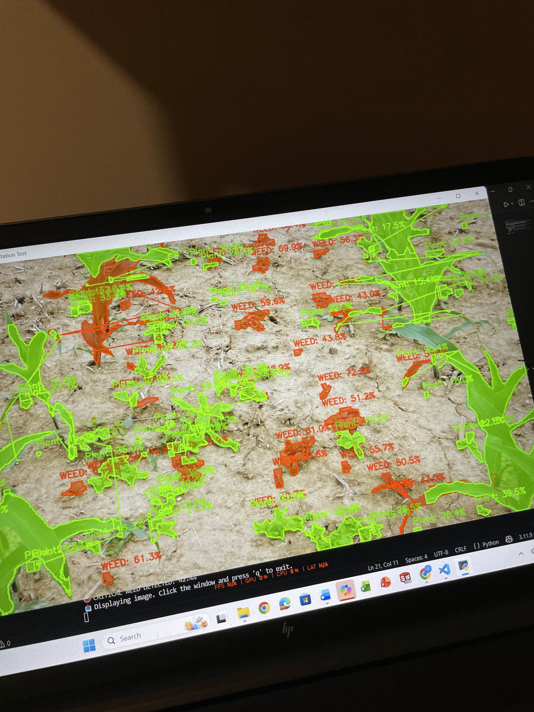
Version 2 — Annotated Kaggle Dataset
Switching to a properly annotated Kaggle dataset of crops and weeds was a real improvement in label quality — but a new problem appeared.
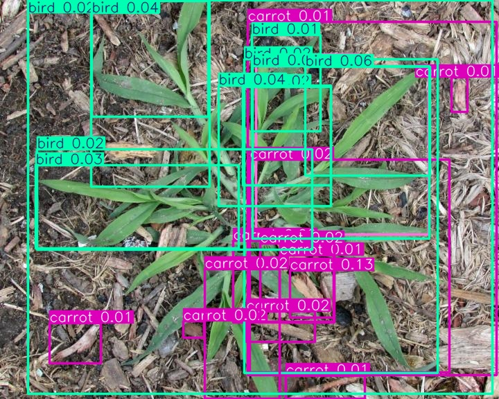
Version 3 — The Flagship Dataset (DataNinja)
A significantly better dataset from DataNinja. This is where the core problem underlying both earlier attempts became clear: class imbalance — far fewer crop examples than weed examples.
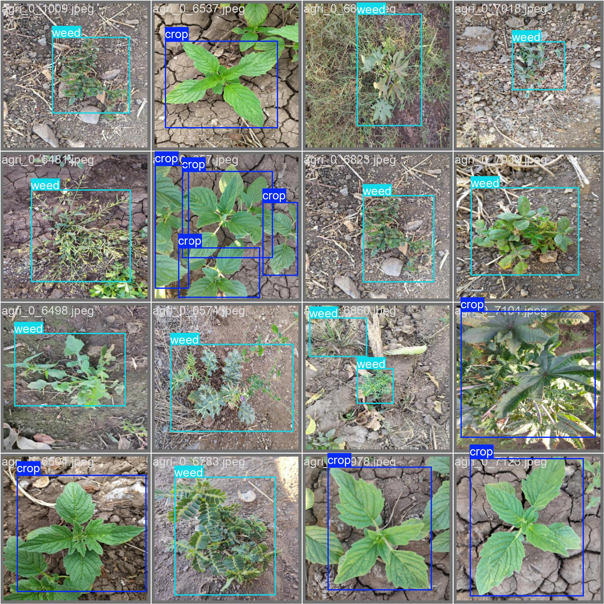
Model & Iterations
Our base model was YOLOv8, fine-tuned on the flagship weed-vs-crop dataset. The end-to-end pipeline goes from raw field footage all the way to a working detection model behind a web interface.
End-to-End Pipeline
- Data Collection: GoPro footage from the ATV → frame extraction.
- Preprocessing: Cropping, brightness/saturation correction, noise reduction.
- Augmentation: Randomized brightness, saturation, and scale to prevent overfitting and address class imbalance.
- Annotation & Curation: Combined and rebalanced datasets (V3 flagship) for crop vs. weed labels.
- Training: Fine-tuning YOLOv8 on the curated dataset using the Cardinal supercomputer.
- Evaluation: Confusion matrix, accuracy, precision, recall, and F1 score across training rounds.
- Deployment: Web interface for uploading and classifying field images/video — the interface that would drive an automated sprayer.
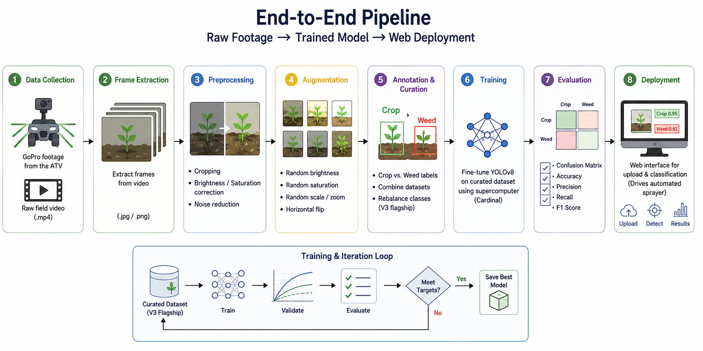
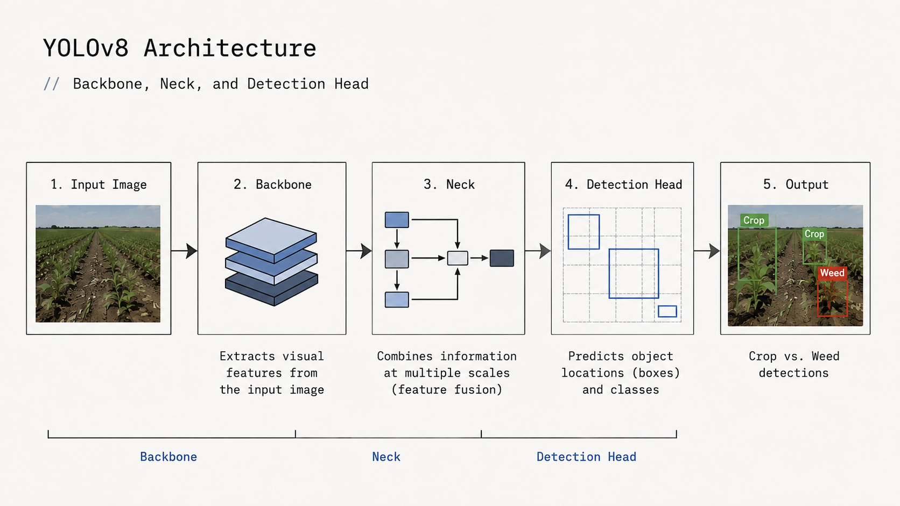
Training on the Cardinal Supercomputer
Through the STEM Institute program, we had access to high-performance computing resources that would otherwise be completely out of reach for a project like this — specifically, the Cardinal supercomputer.
Hardware
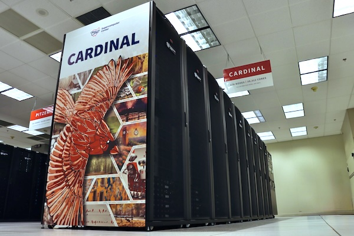
Training Rounds
We ran 3 training rounds on the flagship dataset, evaluating model performance after each round using a consistent set of metrics: confusion matrix, accuracy, precision, recall, and F1 score. Each round informed dataset or hyperparameter adjustments for the next.
Evaluation & Results
After three training rounds on the flagship dataset, we evaluated the model using a standard set of object detection metrics.
Confusion Matrix
The confusion matrix breaks down the model's predictions against ground truth — how often weeds were correctly identified as weeds, crops as crops, and where the model confused the two. We viewed this both as raw prediction counts and as normalized percentages, to understand both overall volume and per-class error rates.
Precision, Recall & F1
- Precision: Of everything the model flagged as a weed, how much actually was a weed. High precision matters for an automated sprayer — false positives mean wasted spray on crops.
- Recall: Of all the actual weeds in the field, how many the model successfully detected. High recall matters because missed weeds don't get sprayed at all.
- F1 Score: The harmonic mean of precision and recall — a single number that balances both, useful for comparing model versions across training rounds.
Box Loss & Class Loss
During training we tracked box loss (how accurately predicted bounding boxes matched ground-truth boxes) and class loss (how confidently and correctly the model assigned the weed/crop label) across each round. Watching both curves trend downward across the three training rounds was the clearest signal that the rebalanced flagship dataset was actually fixing the problems from V1 and V2.
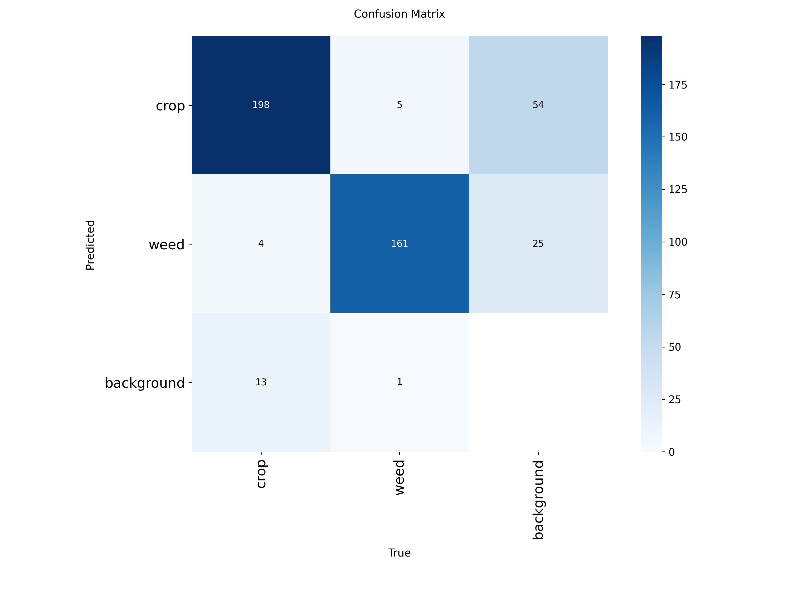
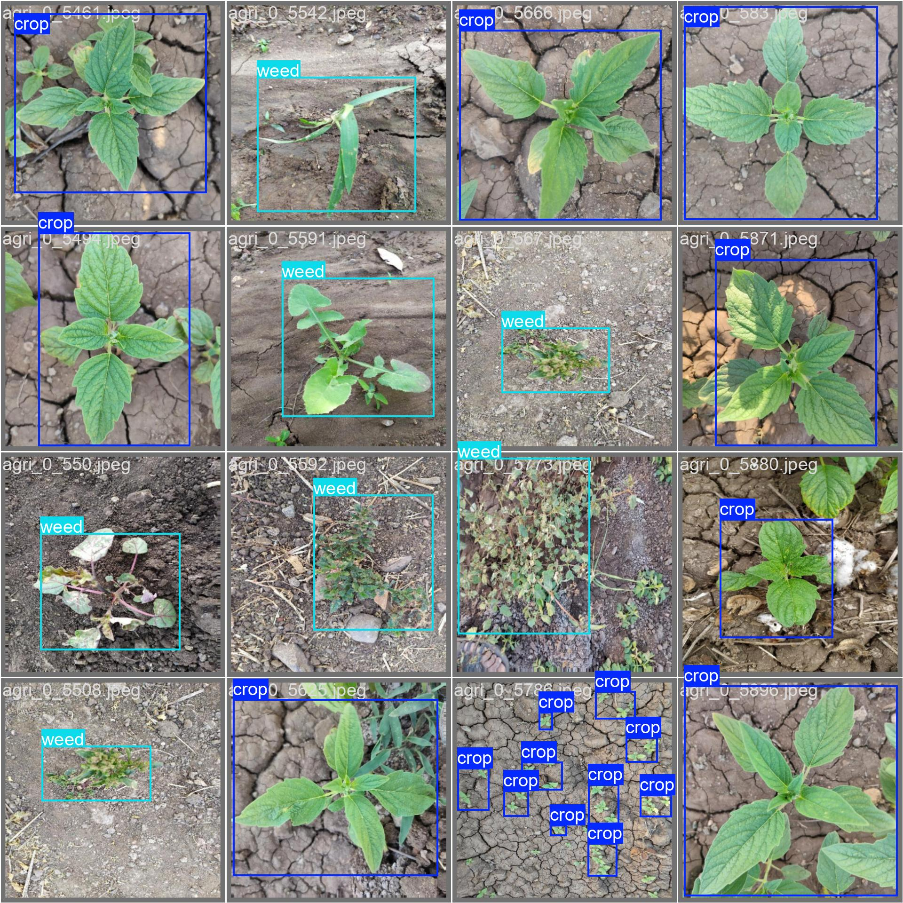
Web App & Demo
The final deliverable was a working application: a fine-tuned YOLOv8 model running real-time inference on weeds in corn fields, accessible through a simple web interface.
What the App Does
- Real-time inferencing: Detects weeds in corn field footage as it's processed.
- Web interface: Upload your own image or video and run it through the model to get classified results.
- Output: Bounding boxes drawn around detected weeds, with class labels and confidence scores — the same output format an automated sprayer would use to decide where to spray.
Reflection
This project was done through the STEM Institute (SI) program, working alongside a team and with access to HPC resources through the Cardinal supercomputer that wouldn't otherwise be available. I led the model side end-to-end — dataset curation across three iterations, fine-tuning YOLOv8, optimizing training on the H100, and building out the evaluation pipeline. It's the project that pushed me furthest into machine learning and gave me a real sense of how AI gets applied to a physical, real-world system rather than just a benchmark dataset.
Ender 3 V2 Neo — Full Rebuild
Got my first 3D printer in 5th grade. It didn't work out of the box. Two years later, it was a completely different machine — Klipper firmware, dual Z axis, input shaping, CF-capable hotend, AI failure detection, and remote access from anywhere. This is the story of every issue I hit and how I fixed it.
Printer Overview
The Ender 3 V2 Neo is a budget bed-slinger — one of the most popular entry-level 3D printers. Out of the box, mine had every problem a printer can have: Z banding, bed leveling failures, adhesion issues, incorrect E-step calibration, and consistent overextrusion. I didn't realize I was about to fall into a two-year rabbit hole of hardware and firmware engineering.
I did everything myself — no technician, no paid service. Every fix, every calibration, every upgrade was researched, planned, and executed solo.
The Problem Chain
What made this project difficult wasn't any single issue — it was that fixing one thing revealed the next. Z banding pointed to firmware. Firmware pointed to the Z axis. The Z axis pointed to motion system geometry. Motion geometry pointed to resonance. Every fix compounded into a better understanding of what a printer actually is: a precision motion system, not a magic box.
Firmware — Marlin → Klipper
The first thing I tried was manual calibration — bed leveling, E-steps, flow rate. It helped, but the printer kept drifting back to bad behavior. After enough research, I realized the root cause wasn't calibration technique — it was the firmware itself.
The Marlin Problem
The stock Ender 3 V2 Neo runs Marlin firmware. Marlin is compiled and flashed as a static binary — to change any motion parameter, you have to recompile the entire firmware and reflash it. The E-step values available in the stock Marlin build didn't match my hardware accurately enough, and there was no clean way to fix it without getting into firmware compilation. For a 5th grader who hadn't done that before, it was a dead end.
Switching to Klipper
Klipper moves all the printer's configuration into a human-readable text file — printer.cfg — and runs the motion planning on a Raspberry Pi rather than the printer's onboard microcontroller. The microcontroller just executes low-level step signals. This means:
- Every parameter is live-editable: Change a value in the config, restart, done. No recompilation, no reflashing.
- Much faster computation: The Pi handles all the kinematics, pressure advance, and input shaping math — far more processing power than the stock 8-bit board.
- Mainsail/Fluidd interface: Full web-based control panel accessible from any browser on the network.
- Pressure advance: Klipper's pressure advance algorithm dynamically adjusts extrusion rate through speed changes — eliminating the bulging corners and gaps that Marlin's basic extrusion model produces.
The Pi 3B → Pi 5 Upgrade
I started with an old Raspberry Pi 3B with 512MB RAM. It ran Klipper, but at high speeds with input shaping enabled, the Pi couldn't process the motion queue fast enough — the printer would slow down mid-print waiting on computation. The fix was upgrading to a Raspberry Pi 5 (3GB RAM). The difference was immediate — no more computation-induced slowdowns, faster startup, and headroom for the AI failure detection camera stream running simultaneously.
Motion System
Even after switching to Klipper, Z banding persisted. Z banding — horizontal lines repeating at regular intervals in prints — is a symptom of inconsistent Z movement. The stock Ender 3 V2 Neo uses a single Z motor and leadscrew. Any wobble, misalignment, or inconsistency in that single screw shows up directly in the print.
Dual Z Axis Upgrade
The fix: add a second Z motor and leadscrew on the opposite side of the gantry, synchronized to the first. With two leadscrews constraining the gantry from both sides, wobble has nowhere to go — the gantry stays level and moves consistently.
- Eliminated single-point wobble: Two screws constrain the gantry rigidly. Any flex in one is corrected by the other.
- Klipper Z tilt: Klipper's Z tilt calibration routine automatically levels the gantry by independently adjusting the two motors — no manual tramming required.
- Eliminated most Z banding: The remaining banding after the dual Z upgrade was traced to motion wheel geometry, not the leadscrews.
Motion Wheels & Eccentric Nut Calibration
The Ender 3 moves its axes on V-slot aluminum extrusions using plastic wheels. If those wheels are too loose, the axis wobbles. Too tight and they bind, causing uneven motion. The adjustment is done via eccentric nuts — offset nuts that move the wheel position when rotated.
- Replaced worn wheels: The stock wheels had flat spots from use — replaced with fresh wheels to restore consistent contact.
- Eccentric nut tuning: Adjusted each eccentric nut to the point where the axis moves smoothly with zero lateral play — checked by pushing perpendicular to the axis of motion while moving it by hand.
- Belt tension: Tuned X and Y belt tension by feel and frequency — a properly tensioned belt produces a consistent low tone when plucked. Too loose causes backlash; too tight increases motor load and wear.
- Frame squaring: Re-squared the entire frame using a precision square — a twisted frame causes the motion axes to not be orthogonal, producing skewed prints regardless of how well the rest is tuned.
Extruder & Hotend
Dual Gear Extruder
The stock Ender 3 extruder uses a single drive gear pressing filament against a smooth bearing. At higher print speeds or with flexible/abrasive filaments, that single contact point can't grip consistently — filament slips, causing underextrusion mid-print.
I replaced it with a dual gear extruder (BMG-style). Two opposing drive gears grip the filament from both sides simultaneously, doubling the contact area and grip force. The result:
- No more slipping: Even at high speeds and with stiff filaments, the filament path is fully controlled.
- Better retraction: Two-sided grip means retraction pulls cleanly without the filament walking sideways in the path.
- Consistent extrusion rate: Combined with Klipper's pressure advance, this eliminated the overextrusion and underextrusion that plagued the stock setup.
Hotend Upgrade for CF Filaments
Carbon fiber reinforced filaments (CF-PLA, CF-PETG, CF-Nylon) are abrasive. The stock brass nozzle wears out within a few hundred grams of CF filament — the bore widens, extrusion becomes inconsistent, and the nozzle has to be replaced. I upgraded to a hardened steel nozzle and an all-metal hotend:
- Hardened steel nozzle: Rated for abrasive filaments indefinitely. No bore wear even after extended CF printing.
- All-metal hotend: Removes the PTFE tube from the high-temperature zone, allowing printing above 240°C — necessary for some CF-Nylon blends that the stock PTFE-lined hotend can't reach safely.
Extrusion Flow Calibration
After every hardware change to the extrusion path, I recalibrated flow rate by printing a single-wall cube and measuring actual wall thickness against the target. Flow percentage is then adjusted in Klipper config until measured and target match.
Power & Reliability
A print that runs for 12 hours and fails in hour 11 due to a power blip is worse than one that never started. Reliability engineering on a 3D printer isn't glamorous, but it matters.
UPS — Uninterruptible Power Supply
I added a UPS (uninterruptible power supply) to the printer's power chain. The specific unit is a surge-protection UPS — not just a surge strip, but a battery-backed unit that provides regulated power output. Here's why it matters:
- Surge protection: Power spikes from the grid don't reach the printer's PSU or the Raspberry Pi. A single voltage spike can corrupt an SD card or kill the Pi's power management IC.
- Regulated output: The UPS outputs stable voltage regardless of input variation. Voltage sags on the input side — common during high-load periods on a shared circuit — don't affect the printer.
- Short outage bridging: A brief power cut (seconds to a minute) won't kill a running print. The battery keeps the printer alive long enough to either resume or park the head safely.
Resonance & Input Shaping
At high print speeds, the printer's frame vibrates. Those vibrations travel into the print head and show up as ringing — a ghosting or ripple pattern in the print surface that echoes the shape of sharp corners. The faster you print, the worse it gets. Solving it is what separates a fast printer from a fast-and-accurate printer.
What Causes Ringing
When the print head reverses direction sharply — at a corner, for example — it imparts an impulse into the printer's frame. The frame has a natural resonant frequency, and that impulse excites it. The head continues moving while the frame rings at its natural frequency, and those micro-oscillations print directly into the part surface.
Input Shaping — The Fix
Klipper's input shaping feature cancels resonance before it happens. It works by measuring the printer's resonant frequency with an accelerometer, then mathematically pre-distorting the motion commands so that the residual vibration from each command cancels out the vibration from the next.
BigTreeTech Accelerometer Measurement
To apply input shaping correctly, you need to know the printer's actual resonant frequency — not an estimate. I used a BigTreeTech ADXL345 accelerometer mounted directly to the print head. Klipper runs a frequency sweep, the accelerometer logs the response, and Klipper's resonance test script identifies the peak resonant frequency and recommends the optimal shaper type and frequency setting.
- X axis resonance: Measured separately from Y — each axis has its own resonant frequency because the moving mass and frame stiffness differ.
- Shaper selection: The recommended shaper balances vibration suppression against the smoothing penalty — more aggressive shapers suppress more vibration but limit maximum print speed.
- Result: Ringing eliminated at speeds where the stock printer would be unusable. Print quality at high speed matches what the stock printer could only achieve at low speed.
Networking & Remote Access
Once Klipper was running on the Pi, the printer had a web interface on the local network. That's useful at home — but I wanted to be able to check on a print, pause it, or cancel it from anywhere. That required solving a real networking problem securely.
The Problem With Simple Port Forwarding
The obvious solution — forward a port on the router to the Pi — exposes the Klipper web interface directly to the public internet. That's a security problem: Mainsail has no authentication by default, so anyone who found the IP could control the printer. Not acceptable.
SSH Tunnel — The Right Solution
The solution was an SSH tunnel: an encrypted connection from a remote device to the Pi that forwards the Klipper web port through the tunnel, without exposing it to the internet at all.
- How it works: The remote device authenticates to the Pi via SSH key (no password — key-only auth). Once the tunnel is open, the Klipper web interface is accessible on localhost of the remote device as if it were on the local network.
- No open ports: Only SSH (port 22) needs to be forwarded — and even that can be restricted to key-auth only, making brute force essentially impossible.
- Encrypted in transit: Everything flowing through the SSH tunnel is encrypted end-to-end. Camera stream, control commands, file uploads — all encrypted.
What Remote Access Enables
- Start, pause, cancel prints from anywhere
- Monitor live camera feed for failures
- Upload new print files remotely
- Adjust temperatures, speeds, and flow mid-print
- Emergency stop if something goes wrong
AI Failure Detection
A webcam pointed at the print bed isn't just for watching — with the right software it becomes an active failure detection system. I integrated Obico (formerly The Spaghetti Detective) — an AI-powered print monitoring system that watches the camera feed and automatically pauses the print if it detects a failure.
How It Works
- Computer vision model: Obico runs a trained model that watches the live camera feed frame by frame, looking for signs of print failure — spaghetti (filament stringed all over the bed), layer shifts, detached prints, and other common failure modes.
- Confidence threshold: When the model's failure confidence exceeds a set threshold, it sends a pause command directly to Klipper via the API and sends a notification.
- Klipper integration: Obico connects to Klipper's API — the same API the Mainsail interface uses. Pause, cancel, and resume commands go directly to the printer.
- Remote notification: Push notification to phone when a failure is detected — so even if I'm not watching, I find out immediately instead of coming home to a pile of wasted filament.
Why This Matters
Long prints — 8, 12, 20 hours — fail. A first-layer detachment at hour 2 that goes unnoticed wastes the remaining 10 hours of print time, filament, and electricity. Automated failure detection catches it in minutes and pauses before the damage compounds. On a printer running carbon fiber filament at $50+ per spool, that's a real cost saving.
Get in Touch
Interested in robotics projects, engineering challenges, and conversations about design and iteration.